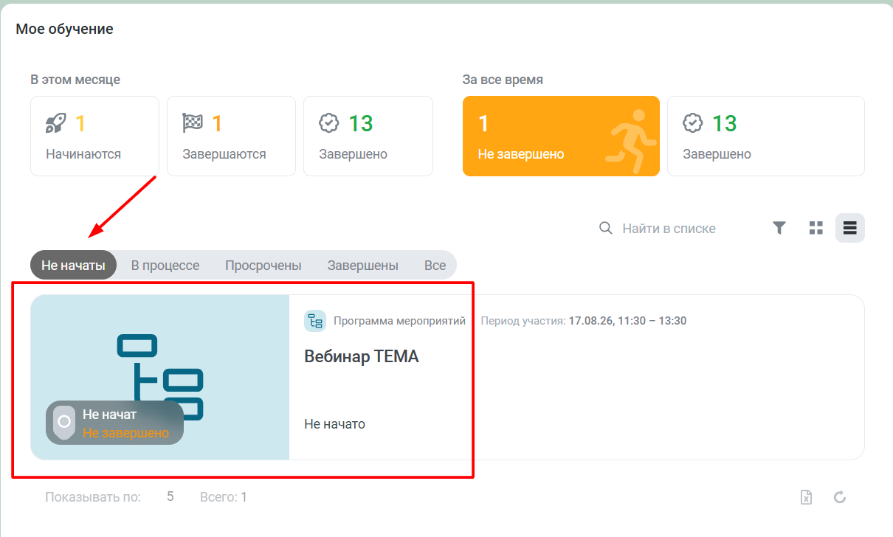
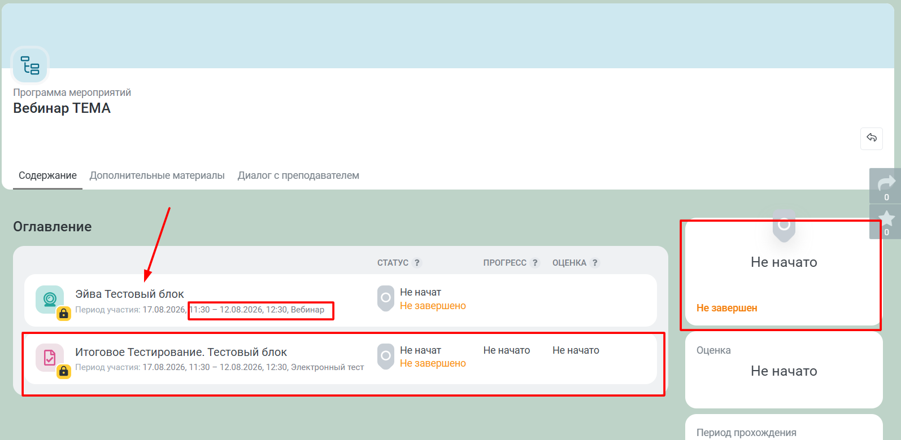

Поиск вебинара
1
Где найти назначенный вебинар
Если вам назначен вебинар, вы можете найти его в разделе «Моё обучение», а также на Главной странице.
Важно: обязательно установите фильтр «Не начаты».

Пример отображения вебинаров в разделе «Моё обучение» с фильтром «Не начаты»
2
Карточка мероприятия
Нажмите на тему вебинара. Откроется карточка мероприятия.

Карточка мероприятия с программой
Обратите внимание: в программе мероприятий указаны два блока:
- Вебинар
- Электронный тест